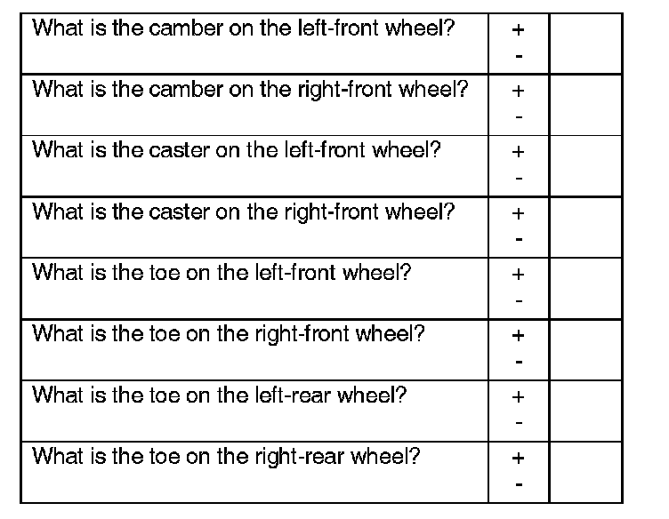
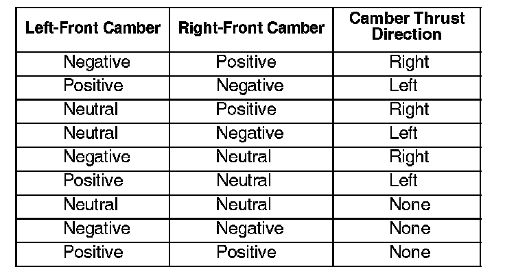
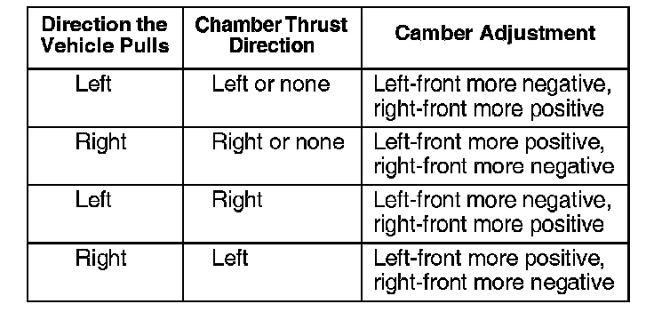
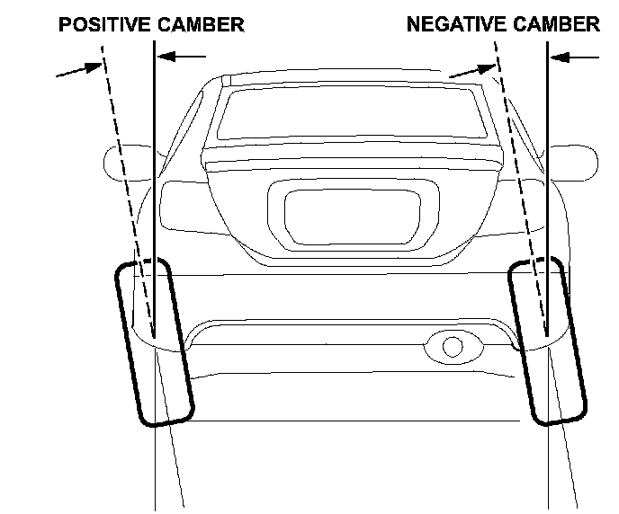
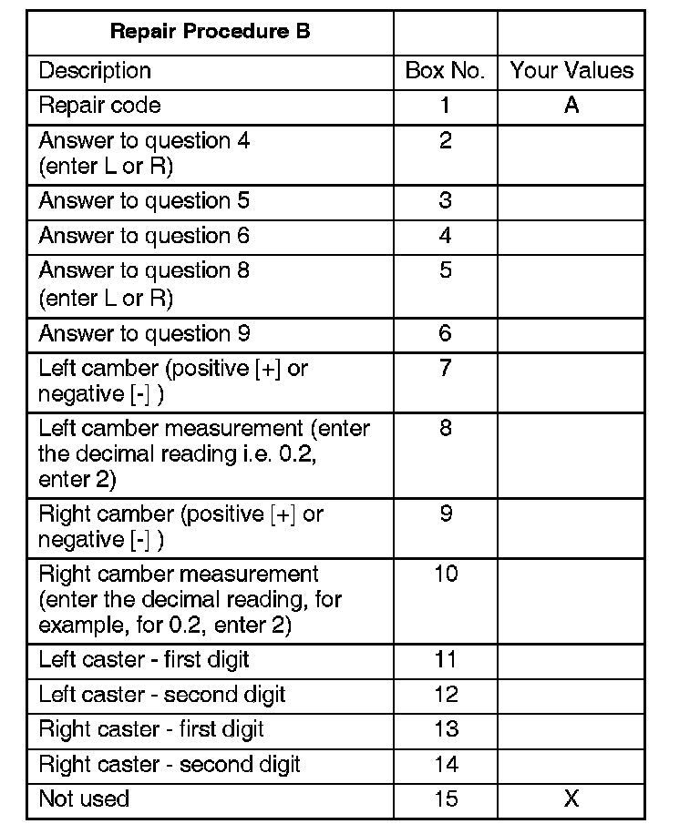

Repair Procedure B

1. Place the vehicle on a commercially available, computerized four-wheel alignment rack, and record the following measurements. Follow the equipment manufacturer's instructions.
NOTE:
Enter each reading in decimal degrees. Example 30 ' = 0.5°.
2. If any measurement is out of specification, inspect the suspension for any damage. Repair the damaged components before continuing your diagnosis.

3. Determine how the front wheel camber is affecting the pull. Pick the combination of left- and right-front camber that best matches the vehicle you are repairing, then note the camber thrust direction for that combination:
NOTE:
^ If the camber of both front wheels is negative, but one wheel is grossly more negative than the other, the camber thrust direction will be opposite the wheel with more negative camber (for example, if the left-front wheel is more negative, the camber thrust direction is right).
^ If the camber of both front wheels is positive, but one wheel is grossly more positive than the other, the camber thrust direction will be the same as the wheel with more positive camber (for example, if the left-front wheel is more positive, the camber thrust direction is left).

4. Determine how the camber needs to be adjusted.
5. Adjust the camber as needed.
Camber Adjustment, Double Wishbone Suspension

^ Loosen the subframe bolts. See the applicable service manual for more information.
^ Depending which way you need to shift the subframe, insert pry bars between the subframe and body at both the front and rear positions of the subframe.
NOTE:
Be careful not to damage the vehicle. You could bend and damage the frame and/or body if you apply too much pressure.
^ Press on both pry bars to shift the subframe. It will move only a few millimeters. This should adjust the camber about 0.2 -0.5°.
^ While holding the subframe in place, have an assistant torque the subframe bolts to their proper torque.
Camber Adjustment, Strut Suspension
^ Raise the vehicle, and remove the front tires.
^ Loosen the damper pinch bolts and flange nuts.
^ Adjust the camber by moving the bottom of the damper within the range of the damper pinch bolt free play.
NOTE:
Some vehicles have special pinch bolts available that allow more adjustment. For more information, refer to the parts catalog.
^ Tighten the damper pinch bolts to the specified torque.
^ Reinstall the front wheels, and lower the vehicle. Bounce the front of the vehicle several times to stabilize the suspension.
6. Test-drive the vehicle to make sure it no longer pulls. If the steering wheel is now off-center by more than 2 mm, go to REPAIR PROCEDURE C.

7. Use your diagnosis worksheet to fill in the table and build your 15-digit DTC.
NOTE:
Enter each reading in decimal degrees. Example 30 ' = 0.5°.